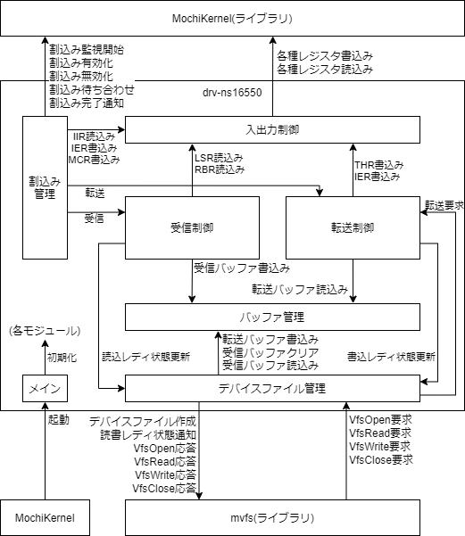

モジュール構成
drv-ns16550のモジュール構成を以下に示す。

| # | モジュール名 | 動作 スレッド |
概要 | |
| 和名 | 英名 | |||
| 1 | メイン | main | メイン スレッド |
起動時に各モジュールを初期化する。 |
| 2 | 入出力 制御 |
Ioctrl | 全て | NS16550への各種レジスタ読み書きを直接行う。 |
| 3 | バッファ 管理 |
Bufmng | 全て | 転送データと受信データのバッファを管理する。 |
| 4 | 割込み 管理 |
Intmng | 割込み管理 スレッド |
NS16550からの割込みを監視し、割込み発生時は割込み要因を判定して転送制御モジュール機能または受信制御モジュール機能を呼び出す。 |
| 5 | デバイス ファイル 管理 |
Filemng | メイン スレッド |
デバイスファイルを作成し、デバイスファイルの操作要求を受け付けて処理を行う。また、デバイスファイルの読書レディ状態を通知する。 |
| 6 | 受信制御 | Rxctrl | 割込み管理 スレッド |
入出力制御モジュール機能を用いてNS16550からデータを取得し、バッファ管理モジュール機能を用いて受信バッファにデータを追加する。受信バッファにデータを追加した際に読込み可能であることをデバイスファイル管理モジュールに通知する。 |
| 7 | 転送制御 | Txctrl | メイン スレッド |
バッファ管理モジュールから転送するデータを取得して入出力制御モジュール機能を用いてNS16550にデータを書き込む。転送バッファからデータを取得した際に書込み可能であることをデバイスファイル管理モジュールに通知する。 |